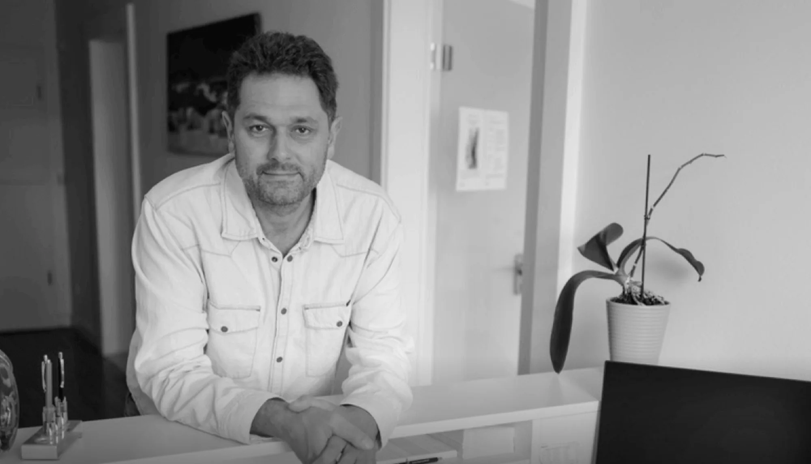
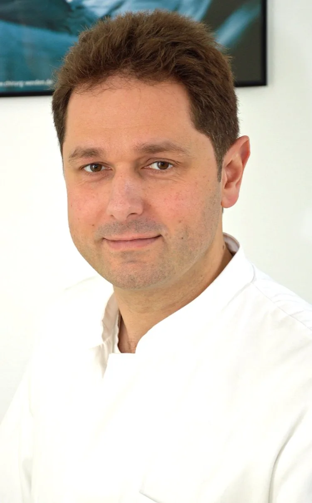

Proktologische Diagnostik
Gründliche Untersuchung mit modernen Verfahren. Schonend, in ruhiger Atmosphäre und mit Erklärung vorab, was genau passiert.

Koloproktologie · Düsseldorf
Proktologische Erkrankungen betreffen sehr viele Menschen und sind in den meisten Fällen gut behandelbar. Vorausgesetzt, jemand schaut rechtzeitig hin.
„Kaum jemand kommt gern zu mir. Meine Aufgabe beginnt deshalb damit, Ihnen die Scheu zu nehmen.“
Hämorrhoiden, Fissuren, Fisteln: Beschwerden, über die kaum jemand spricht — und mit denen fast alle zu lange warten. Die Folge ist selten, dass es von allein besser wird. Meist wird die Behandlung nur aufwendiger.
In meiner Praxis nehmen wir uns Zeit. Ich erkläre jeden Schritt, bevor er stattfindet, und wir entscheiden gemeinsam, was sinnvoll ist. Kein Durchlauf, keine Eile, keine Formulierungen, hinter denen man sich verstecken muss.
Dr. med. Thomas Webler
Von der ersten Untersuchung bis zur Operation bleibt die Behandlung in einer Hand. Kein Weiterreichen, keine Wiederholung der eigenen Geschichte.
Gründliche Untersuchung mit modernen Verfahren. Schonend, in ruhiger Atmosphäre und mit Erklärung vorab, was genau passiert.
Je nach Stadium von der konservativen Therapie bis zum minimalinvasiven Eingriff. Nicht jede Stufe braucht eine Operation.
Behandlung schmerzhafter Einrisse und entzündlicher Gangbildungen — ein Bereich, in dem Erfahrung den Unterschied macht.
Chirurgische Eingriffe in bewährter Technik, mit der Routine aus vielen Jahren Klinik im Hintergrund.
Früherkennung von Veränderungen im Enddarmbereich. Kurz, schmerzarm und der wirksamste Termin, den Sie hier haben können.
Unsicher nach einer Diagnose oder vor einem geplanten Eingriff? Eine zweite Einschätzung kostet wenig Zeit und schafft Klarheit.

Facharzt für Chirurgie
Nach vielen Jahren als Oberarzt in der Klinik habe ich mich bewusst für die eigene Praxis entschieden. Nicht weil die Medizin dort eine andere wäre, sondern weil in diesem Fachgebiet die Zeit für das Gespräch mindestens so viel zählt wie der Eingriff selbst.
Was ich aus der Klinik mitgenommen habe, ist die Routine bei Eingriffen, die man nicht gelegentlich machen sollte. Was hier dazukommt, ist die Ruhe, sie richtig vorzubereiten.
Erreichbarkeit
Sprechzeiten
Bei akuten Beschwerden rufen Sie bitte an — wir versuchen, kurzfristig einen Platz zu finden.
Die meisten proktologischen Beschwerden lassen sich gut behandeln — am einfachsten dann, wenn man früh damit kommt. Ein Termin dauert weniger lang als das Zögern davor.
Termin vereinbaren